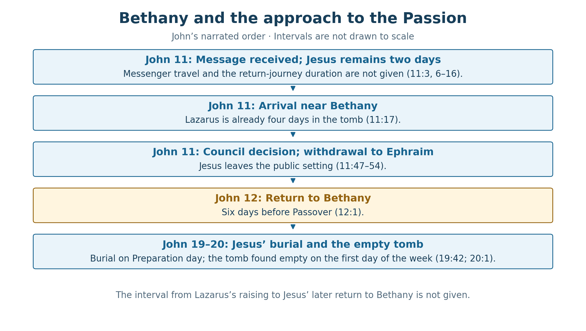
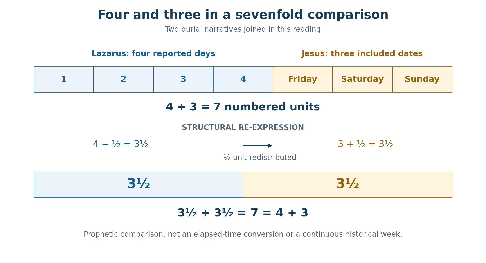

Book 1 · The Cross at the Center of Time · Chapter 9 of 18
Four days at Bethany and the three-day promise of the living Temple
“I am the resurrection and the life.”
— John 11:25
The numbers of the previous chapter have brought us to a question that reaches beyond calculation. What does a measured life mean beside a grave? At Bethany, John places us among people who know the weight of that question. Lazarus is dead. His sisters had sent for Jesus while their brother was ill. Now Martha comes to meet Him, convinced that her brother would not have died if Jesus had been there.
Jesus speaks the words above to Martha before reaching the tomb. She believes that her brother will rise in the resurrection at the last day. He brings that future hope into relation with His own presence. The One standing before her is the life for which she waits.1
I want to follow John into that meeting. The four days of Lazarus' burial and the three-day promise concerning Christ's body invite a sevenfold comparison. Their meaning belongs first to the people, the deaths, and the acts of God that John describes. The numbers help me see their relationship; the voice that calls the dead gives the relationship its power.
In this chapter
The delay and the love
John makes Jesus' love for this household explicit. He then tells us that, after hearing of Lazarus' sickness, Jesus remains where He is for two days. Love and waiting stand beside one another in the narrative. The delay will become part of the revelation of God's glory, although those who are grieving cannot yet see its outcome.
The disciples face a different difficulty. Returning to Judea means returning toward people who recently sought to stone their Master. Jesus answers their concern with the image of walking in daylight. A person who walks by the day's light sees the way; walking in darkness brings the danger of stumbling. His reference to the day's twelve hours belongs to that answer about the path before Him.2
The saying carries temporal force without supplying a travel itinerary. Daylight is a period for walking and work, and His appointed task lies ahead. John does not turn the twelve hours into a statement that the journey takes half a twenty-four-hour day or that Lazarus will emerge at sunset. I hear confidence in the Father's appointed work: Jesus proceeds toward Bethany within the light given for His mission.
Thomas responds with a willingness to accompany Him even into death. The disciples are going toward the place where a dead man will live, while fearing that their own journey may end in death. That tension prepares us for what the sign will cost its Giver.
The journey can also be considered through the half-week pattern explored earlier. An outward messenger journey represented by one day, a two-day stay, and a return represented by half a day would give:
1 + 2 + ½ = 3½ days.
The first and last durations in that construction are assumptions. John states the two-day stay, while leaving the messenger's travel time and Jesus' return duration unspecified. The model therefore begins with the messenger's departure from Bethany. If we begin instead when Jesus receives the message, its own assumptions give 2 + ½ = 2½ days to arrival.3
Table 1 — The proposed journey figure and its starting boundary
| Segment | Model count | Basis |
|---|---|---|
| Message carried from Bethany | 1 day | Selected travel assumption; precedes receipt |
| Stay after the message is received | 2 days | John 11:6 supplies the two-day stay |
| Return toward Bethany | ½ day | Selected travel assumption |
| Dispatch through arrival | 3½ days | 1 + 2 + ½ |
| Receipt through arrival | 2½ days | 2 + ½ |
I retain the half-week as a possible representation of the journey's movement through message, waiting, and return. Its value is a proposed correspondence. The events John actually dates must carry their own testimony alongside it.
Four days at the tomb
When Jesus arrives, Lazarus has already been in the tomb four days. John repeats the number when Martha objects to removing the stone. The body has been there long enough for her to expect the odor of decay. The account gives us the arrival notice and then the family's own recognition of what those days mean.4
That is enough to establish the sign's gravity. Jesus is confronting a death accepted and mourned by those who loved Lazarus. The body lies in a cave with a stone at its entrance. Mary and the mourners weep, and Jesus Himself weeps. The sorrow belongs within the revelation of life; divine power does not make the family's loss unreal.
A later rabbinic comparison can deepen our sense of the fourth day. Genesis Rabbah and Leviticus Rabbah preserve traditions about the soul remaining near the grave or body for three days and departing when the face changes. These collections were compiled centuries after the events of John's Gospel. They give us a later Jewish image of the first days after death, rather than evidence that everyone in first-century Bethany held one precise belief about the soul.5
Nor do those traditions establish a limit beyond which God was thought incapable of raising the dead. Martha herself has already confessed her hope in the final resurrection. Her objection concerns the condition of her brother's body now. The fourth day makes the loss painfully tangible, and Jesus answers that tangible loss.
He prays before the gathered people and then calls Lazarus by name. The man comes out, still bound with burial cloths, and Jesus directs those present to release him. The living voice reaches the place where no human voice could obtain a response. Those who had shared in the mourning now take part in freeing the man restored to them.
This is the authority anticipated earlier in John's Gospel, where the Son speaks of the dead hearing His voice and living. At Bethany that promise takes the form of a particular man, known by name, returned to his sisters. I see in him a personal sign of a far greater gathering.6
From the sign to the sentence
The raising of Lazarus changes the movement of the Gospel. Many of those who witness what Jesus has done believe in Him. Others report the event to the Pharisees. The chief priests and Pharisees convene a council, where anxiety about Jesus' following becomes anxiety about Roman intervention and the loss of their place and nation.
John identifies both the authorities who deliberate and the witnesses who believe. The council's concern about Rome stands within a Jewish story whose grieving family, disciples, and Messiah share Israel's hope. Responses to the sign divide the people who encounter it, while the council's political calculation moves the narrative toward the Passion.7
Caiaphas argues that the death of one man is preferable to the destruction of the nation. John hears a prophecy within the high priest's counsel: Jesus will die for the nation and gather God's scattered children into one. This is especially close to the purpose I have been following throughout the book. The scattered are gathered through the death of the One whom the council resolves to kill.
The sign and the sacrifice consequently belong to one movement. Jesus gives Lazarus back to life, and the council moves toward putting Jesus to death. In John 12, the chief priests also plan to kill Lazarus because his living presence is drawing people toward Jesus. The restored man becomes a witness whom the opponents wish to silence.
There is a difference between the two victories that helps us understand their union. Lazarus returns to life within the world where he can still be threatened with death. Christ's Resurrection opens the life over which death no longer rules. The earlier sign points toward that victory while retaining the particular gift it brings to this family.8
John next describes Jesus withdrawing to Ephraim. Only later does he tell us of Jesus' return to Bethany six days before Passover. That later marker dates the return, not the raising. The council and the withdrawal stand between the two scenes, with no measured interval supplied for us to fill in.


The raising precedes the council, withdrawal, and later return to Bethany. The six-day notice belongs to that return. The diagram preserves the sequence without assigning an otherwise unknown number of days between its scenes.
Four and three gathered into seven
The four days of Lazarus and the three-day language concerning Christ's body can now be brought together. John 2 has already identified Jesus' body as the Temple He will raise. The Passion narrative takes us through Friday, Sabbath, and the first day of the week. The three named days express the familiar inclusive shape of that sequence.9
Table 2 — Two counts brought into comparison
| Witness | Count used here | What the count describes |
|---|---|---|
| Lazarus | 4 | The days already in the tomb at Jesus' arrival |
| Christ | 3 | The three-day promise, read beside Friday–Sunday inclusively |
| Joined figure | 7 | 4 + 3, a theological comparison of the two accounts |
The total has the form of a week:
4 + 3 = 7.
These are two burial accounts at different points in the narrative. Adding their numbered days does not turn them into a continuous seven-day historical interval. I am gathering their counts as I gathered offerings, festivals, and measures in the preceding chapters. Their distinct settings contribute to the figure.
The four days bring us to a body whose condition makes Martha hesitate to open the tomb. The three-day promise brings us to Christ's own authority over His body-Temple. Read together, they show life entering a place already claimed by death, and then the Lord of life passing through death Himself.
Seven gives that joined reading a creational horizon. The God who orders the first week is at work in the renewal of His creation. I see the completion of a week in the form of the comparison, and I read its completion through Christ's victory. The claim concerns the fullness to which the number points, rather than a demonstration that the two tombs held their occupants for a combined 168 hours.
The two halves of the prophetic week
The same sevenfold total can be expressed symmetrically:
3½ + 3½ = 7.
The relation between the two expressions is exact. Moving half a represented unit from the four to the three balances them:
(4 − ½) + (3 + ½) = 3½ + 3½ = 7.
This is a structural re-expression of the figure. It does not subtract twelve historical hours from Lazarus' burial or add twelve to Christ's. I place the asymmetric four and three beside the balanced half-weeks so that their shared total can be considered openly.10


The upper row joins the two narrative counts. The lower row balances the figure into half-weeks. The diagram is a prophetic comparison, rather than a continuous historical burial timeline or a calendar conversion of elapsed time.
Revelation gives the half-week its own narrative force. Its witnesses complete their testimony, are killed, lie exposed for three and a half days, and receive life from God before their ascent. I read that movement beside Bethany and the Passion: testimony meets hostility, death seems to prevail, and God's life reverses the verdict. The stated durations remain part of each account's distinctive form.11
Inclusive reckoning explains why parts of three dates can be called three days. It does not make a Friday-to-Sunday burial last three and a half elapsed days. Likewise, a fourth-day notice can contain a partial final day without telling us that precisely three and a half days have elapsed. A change of calendar labels also leaves the elapsed interval between two fixed events intact. A longer half-week frame needs its own earlier starting event, which the Passion discussion will consider.
The Repository's related half-week studies provide a useful discipline here: a repeated pattern can support a typological relationship while its separate narratives and chronological settings remain distinct. The Lazarus comparison developed in this chapter is my application of that wider grammar, rather than a previously established canonical timetable for his burial.12
I believe the relation is still worth following. A figure need not reproduce every surface measurement to disclose a common purpose. The two tombs and Revelation's witnesses bring us again to the divine answer to death. The sevenfold form gives that answer a shape through which I can contemplate its completeness.
The seven declarations of life
John's declarations of Jesus' identity offer a further sevenfold comparison. The familiar selection begins with bread and ends with the vine. Between them stand light, the gate, the shepherd, resurrection, and the way to the Father. The Gospel does not number this list for us; it is a conventional grouping of seven major images in sayings where Jesus identifies Himself.13
Table 3 — Seven major images in Jesus' declarations
| Position | Image | Passage |
|---|---|---|
| 1 | Bread of life | John 6:35 |
| 2 | Light of the world | John 8:12 |
| 3 | Gate | John 10:7, 9 |
| 4 | Good shepherd | John 10:11, 14 |
| 5 | Resurrection and life | John 11:25 |
| 6 | Way, truth, and life | John 14:6 |
| 7 | True vine | John 15:1, 5 |
The first four stand before the Lazarus scene. The last three begin with the declaration to Martha and continue into the farewell discourse. This yields another 4 + 3 arrangement within the selected list. The fifth saying becomes a threshold: the life promised and pictured throughout the ministry meets a family grieving its dead, before the final discourse prepares the disciples for Jesus' departure.
The opening bread and closing vine also invite a eucharistic reading. Bread and wine belong to the Christian meal of remembrance, and John's bread discourse speaks of the life given through Christ's flesh. The vine image then places the disciples' continuing fruitfulness in their abiding union with Him. The vine discourse itself speaks of the vine, branches, and fruit; its association with the cup is the connection I draw within the larger Gospel setting.14
The selected sayings can therefore be read through provision and communion. Christ feeds, illumines, receives, and shepherds His people. He brings resurrection into Martha's hope, opens the way to the Father, and sustains the branches that bear fruit. The declarations carry us toward a relationship with the One who gives life.
The familiar grouping of seven signs supplies a companion reading. It commonly counts Cana, the official's son, the Bethesda healing, the feeding, the walking on the sea, the man born blind, and Lazarus. John explicitly numbers the first two signs in their respective contexts, but he does not print a continuous one-to-seven register across the whole Gospel. He also tells us that Jesus performed other signs. Lazarus' place as the seventh belongs to this selected arrangement.15
Within that arrangement, the restoration of a dead man brings the public signs to their culmination before the Passion. The seven sayings and seven signs can speak together because the deeds disclose the life that the declarations name. I read their correspondence as part of John's theological artistry while keeping the selection visible. Neither series has to become an exclusive census of everything Jesus said or did.
From the tomb to the table
When Jesus returns to Bethany six days before Passover, Lazarus is among those reclining at the meal. Martha serves. Mary takes costly perfume, anoints Jesus' feet, and wipes them with her hair. The house fills with its fragrance. Jesus places her act in relation to His burial.16
The change in the family's circumstances is striking. At the tomb, Martha had feared the odor of a body four days dead. At the meal, the house is filled with fragrance while that same brother lives among the guests. Mary, who had wept before Jesus, now honors the One approaching His own death. John brings the restored life and the anticipated burial into the same room.
I see a deeper continuity there than an assumed match of clock hours could supply. Lazarus' return has helped set in motion the decision to kill Jesus. His living presence at the table bears witness to the power of the Guest whom Mary anoints. The gift of life and the coming self-gift of the Giver belong together.
When the Gospel reaches Jesus’ burial, it gives us an evening setting that the Lazarus account does not supply. Mark says evening had come on the Preparation day before the Sabbath. John records the nearby tomb and the urgency associated with the Jewish Preparation. Lazarus' raising is not assigned an hour, so an exact sunset-to-sunset transfer between the two tombs remains unavailable. The continuity I follow is the Gospel's passage from the sign at one tomb toward the sacrifice and victory at the other.17
That passage also helps us attend to the burial cloths. Lazarus emerges with his hands and feet bound, and others release him. At Jesus' empty tomb, the linen and face cloth remain behind. John gives the two scenes different bodily forms, appropriate to the distinct events. The first returns a brother to a household; the second confronts the disciples with the risen Lord's victory.
The reach of the living voice
Four and three have now met in more than one arrangement. The burial accounts supply a sevenfold figure. The selected declarations place four before Bethany and three from Martha's meeting onward. Revelation supplies the related language of half-weeks, testimony, death, and renewed life. Their relations draw my attention toward the One whom John presents as life's source.
Four also has an outward reach in Revelation: winds, corners of the earth, and the living creatures around the throne. Its first four seals form a recognizable group in which those creatures summon the horses and riders. Such uses make a four-plus-three arrangement at home within the book's symbolic language. They do not turn every four into an identical code. I read the whole seven through God's purpose for His creation, with the particular images preserving their own work.18
At Bethany, that purpose reaches a named man through the voice of Christ. In John's explanation of Caiaphas' prophecy, it reaches the scattered children of God through the death of Christ. The personal sign and the gathering into one belong within the same account. This is why I regard Lazarus as more than an illustration placed beside the Passion. His restoration participates in the narrative that leads the Giver of life toward His own sacrifice.
I also continue to consider the Cross as possibly the actual center from which time receives its redeemed order. In that perspective, Bethany may receive the efficacy of the sacrifice before its historical accomplishment, just as later generations receive it afterward. The grace reaching backward and forward would be an action of God within His creation, greater than a pattern imposed by our reading. The numbered days do not measure its hidden extent.
I can follow the days John gives and still believe that the life speaking within them exceeds our access to its working. Jesus knows the death the disciples have yet to understand. He approaches the grief of the sisters. He prays, speaks, and calls the man out. God's appointed work arrives within the family's days of mourning.
The next chapter follows the same Lord toward the Passion. We will set the day boundaries and named events beside one another, keeping the calendar comparisons attached to their stated starting points. Bethany has prepared us for that inquiry by bringing its purpose close: the One whose time we seek to measure is the One whose voice reaches the dead.
Sources and notes
1. John 11:17–30. The opening excerpt is BSB. Martha meets Jesus while He is still outside the village; verse 30 distinguishes this meeting from His later arrival at the tomb. Her last-day hope is explicit in verse 24. Return to text
2. John 11:5–16, read beside John 9:4–5 and 10:39–42. The two-day stay is explicit. The twelve-hour daylight saying answers the disciples' concern about returning to danger. John does not specify the travel durations or a sunset raising. Return to text
3. Table 1 is a conditional construction. The one-day messenger leg precedes receipt of the message, so 1 + 2 + ½ = 3½ begins at dispatch. From receipt, the same assumptions give 2½. No exact departure time, route, or continuous twenty-four-hour interpretation of each narrative day is independently established here. Return to text
4. John 11:17, 39 gives the two explicit four-day notices. John 12:1 supplies a different number: six days before Passover. It does not repeat four days or date the raising four days before the feast. The stone's weight and the hour of the raising are not stated. Return to text
5. Genesis Rabbah 100:7; Leviticus Rabbah 18:1, primary passages in Sefaria's Hebrew text and attributed English translations. The former places the soul near the grave; the latter near the body. Both associate departure with a change in appearance. Sefaria's work metadata places Genesis Rabbah around AD 400 and Leviticus Rabbah in late antiquity. These are comparative witnesses, not proof of a universal first-century doctrine or of a belief that divine resurrection becomes impossible on the fourth day. Return to text
6. John 5:21, 25–29; John 11:33–44. The Johannine connection between the Son's voice and life for the dead precedes the Lazarus sign. Burial cloths and the command to release Lazarus are stated in verse 44. Return to text
7. John 11:45–54; John 12:9–11. John identifies both believing witnesses and the council's decision. The interpretation of Caiaphas' words in 11:51–52 expressly joins death for the nation with the gathering of God's scattered children. Return to text
8. John 12:10–11 shows Lazarus still subject to a murderous threat; Romans 6:9 describes the risen Christ's freedom from death's rule. The distinction concerns restored mortal life and Christ's definitive Resurrection, without requiring a claim about Lazarus' later biography. Return to text
9. John 2:19–22; Mark 15:42–47 and 16:1–2; John 19:31, 38–42; 20:1. The Friday–Sunday sequence contains three named dates; the actual burial and discovery times do not equal three full elapsed twenty-four-hour days. Return to text
10. Figure 2 transfers half a represented unit between the compared counts while keeping their sum seven. It does not establish the elapsed lengths of either burial. Even in an idealized uniform twenty-four-hour system, events touching four consecutive dates can be more than two and less than four elapsed days apart; events touching three can be more than one and less than three. The date count alone supplies no exact value within those ranges. Ordinary 364/360 rescaling likewise does not turn 3 into 3½ or 4 into 3½. Return to text
11. Revelation 11:3, 7–12. The witnesses prophesy for 1,260 days, are killed, and lie exposed for three and a half days before life and ascent. John 11 supplies Lazarus' four-day burial notice; the Gospel Passion supplies its three-day form. The narrative parallels are typological comparisons, not one elapsed timetable. Return to text
12. File 00 governs claim status and declared numerical operations; File 12 keeps calendar registers and phase offsets distinct; File 17 §§0.3–0.4 governs span states. File 69 §0.6 and §5B.8 bounds its Enoch/Revelation comparison as typological. Those general controls are applied here; the Lazarus comparison is not a canonical burial timetable. Return to text
13. John 6:35; 8:12; 10:7–14; 11:25; 14:6; 15:1–5. Table 3 groups repeated forms of each major image under one entry. It is not an exhaustive count of all occurrences of the Greek expression for “I am,” which also appears outside these predicate sayings. Return to text
14. John 6:51–58; 15:1–8, compared with the bread and cup in Mark 14:22–25. The bread/vine framing is an authorial eucharistic reading, not an assertion that John 15 explicitly describes wine or repeats the institution of the cup. Return to text
15. A conventional selected sequence uses John 2:1–11, 4:46–54, 5:1–9, 6:1–21, 9:1–7, and 11; John 6 supplies two events in that list. Compare the additional signs acknowledged in John 2:23 and 20:30–31. The numbered “second” in 4:54 belongs to its return-from-Judea-to-Galilee setting, rather than proving that no other sign had intervened. Return to text
16. John 12:1–8. The return is six days before Passover; verse 2 introduces the meal. The passage associates the anointing with burial. Its placement does not itself determine the exact civil date of the earlier raising or the hour of the meal. Return to text
17. Mark 15:42–47; John 19:38–42; 20:5–7, compared with John 11:44. Mark supplies the evening setting; it is not a fixed 6 PM timestamp. The nearby tomb and Preparation notice are explicit in John. Return to text
18. Revelation 4:6–8; 6:1–8; 7:1. The first four seals are introduced through the four living creatures; winds and corners describe the earth's extent in 7:1. The four-plus-three comparison and its creational significance are the author's reading. John's different uses of four do not establish one universal numerical substitution rule. Return to text
Scripture quotations are from the Berean Standard Bible (BSB), public domain.